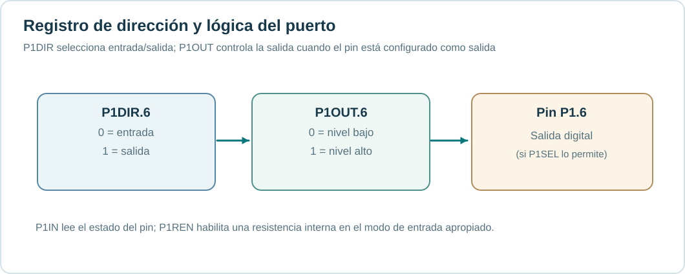
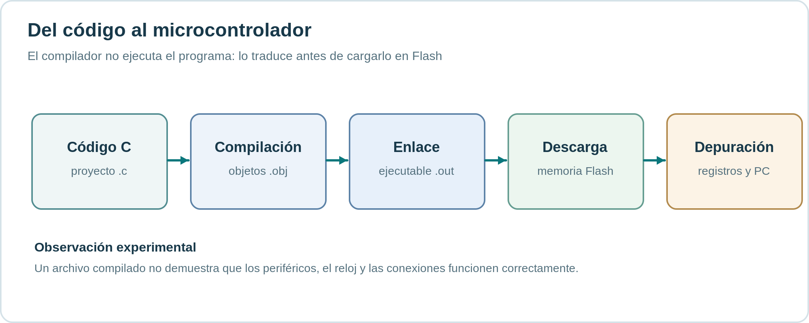
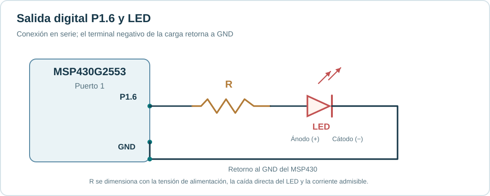
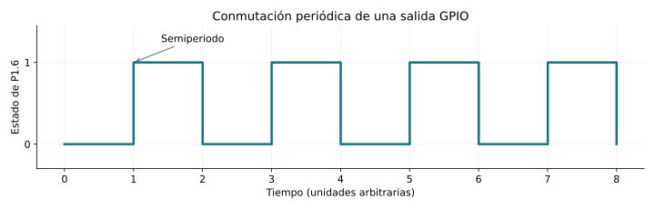

LaunchPad y entorno Code Composer Studio
Hardware, herramientas y primer programa.
120 + 120 + 60 minMSP430G2553Resultados de aprendizaje
- Identificar los subsistemas de la LaunchPad y las conexiones de programación y depuración.
- Crear, compilar, cargar y depurar un programa en Code Composer Studio.
- Configurar puertos GPIO mediante registros y máscaras de bits.
- Estimar retardos por ciclos e interpretar el efecto de la frecuencia de reloj.
La LaunchPad como plataforma experimental
La tarjeta MSP430G2553 LaunchPad integra dos dominios: el microcontrolador objetivo, que ejecuta el código del estudiante, y el depurador/programador, que comunica el equipo con la computadora. La separación de ambos dominios es relevante tanto para transferir programas como para realizar mediciones de corriente sin incluir de manera inadvertida todo el consumo de la interfaz USB.
La placa expone señales mediante conectores y dispone de elementos de interfaz, como LED y pulsador. Antes de conectar circuitos externos, identifique el modelo exacto de LaunchPad, su guía de usuario y la posición de los puentes de configuración. El USB alimenta a la tarjeta, pero los pines del microcontrolador no son entradas de 5 V tolerantes.
CPU, memorias y periféricos del MSP430G2553
La CPU MSP430 es de 16 bits. En el MSP430G2553 encontramos 16 KB de Flash y 512 bytes de RAM, además de puertos GPIO, temporizadores, ADC de 10 bits e interfaces de comunicación. Estas cifras son características del dispositivo elegido; no deben extrapolarse sin comprobarlas a toda la familia MSP430.
El espacio limitado de RAM obliga a administrar con cuidado arreglos, buffers y estructuras. El programa suele residir en Flash, y las variables de trabajo en RAM. Los periféricos se configuran mediante registros mapeados en memoria, de modo que una instrucción de escritura puede cambiar el estado eléctrico de un pin o modificar la configuración de un temporizador.
| Elemento | Función en la práctica |
|---|---|
| Flash | Conservar firmware tras desconectar alimentación |
| RAM | Guardar variables, pila y datos temporales |
| GPIO | Leer pulsadores y controlar LED |
| Timer_A | Generar tiempos y contabilizar eventos |
| ADC10 | Adquirir tensiones analógicas dentro del rango permitido |
| USCI | Comunicar mediante UART, SPI o I²C según configuración |
Compilación y carga del programa en el microcontrolador

Code Composer Studio proporciona un entorno para escribir, compilar y depurar programas. El compilador traduce archivos C a instrucciones para la arquitectura MSP430; el enlazador combina las secciones del programa y asigna direcciones según el mapa de memoria; el programador transfiere la imagen a Flash; el depurador permite observar registros, variables, memoria y ejecución paso a paso.
Los errores de sintaxis o enlace se detectan antes de ejecutar. Los errores lógicos pueden compilar correctamente y producir resultados inesperados: por ejemplo, configurar un pin como entrada y después intentar encender un LED con una escritura en el registro de salida. Por eso, se debe contrastar cada operación del firmware con el mapa de pines y el manual del dispositivo.
Un flujo reproducible incluye documentar la versión de CCS, seleccionar el dispositivo correcto, comprobar el depurador detectado, crear el proyecto, construir sin errores, transferir el firmware y verificar resultados observables.
Primer programa y lectura crítica del firmware
El ejemplo siguiente muestra la intención de configurar el LED rojo en un pin de salida y alternar su nivel lógico. El retardo por ciclos es útil para una demostración inicial, pero no constituye un temporizador preciso: depende de la frecuencia de reloj y de la configuración de compilación.
#include <msp430.h>
int main(void) {
WDTCTL = WDTPW | WDTHOLD; // Detiene el watchdog
P1DIR |= BIT0; // P1.0 como salida
while (1) {
P1OUT ^= BIT0; // Alterna el estado del LED
__delay_cycles(100000); // Retardo relativo al reloj
}
}La expresión P1DIR |= BIT0 activa exclusivamente el bit 0 del registro de dirección y conserva los demás bits. La expresión P1OUT ^= BIT0 invierte el estado de ese pin. El programa permanece dentro del bucle infinito hasta que se interrumpe la alimentación o se reinicia el dispositivo.
|= por = al configurar P1DIR. ¿Qué otros pines se podrían afectar?Depuración sistemática y trazabilidad de resultados
El depurador integrado permite establecer un punto de interrupción (breakpoint) en una línea o instrucción y detener temporalmente la CPU. En ese instante el estudiante puede inspeccionar registros, variables, pila y memoria. Después, la ejecución paso a paso permite observar la secuencia real del programa, distinta en ocasiones de la intención expresada por sus comentarios.
Conviene adoptar un método de verificación reproducible: (1) describir el resultado esperado; (2) identificar la variable o registro responsable; (3) ejecutar hasta el punto relevante; (4) anotar el estado real; (5) comparar con el valor esperado; y (6) cambiar una sola condición para aislar la causa. Por ejemplo, si un LED no cambia, confirme primero que el puerto está en modo de salida, luego examine el bit del registro de salida y, finalmente, la conexión física.
El reloj y los retardos
Una instrucción como __delay_cycles(100000) espera un número aproximado de ciclos de CPU: con reloj de 1 MHz serían 100 ms, suponiendo la frecuencia efectiva indicada; con 8 MHz serían 12.5 ms. Por tanto, un retardo escrito en ciclos no se puede describir como un tiempo fijo sin documentar el reloj. Para aplicaciones de temporización precisa será preferible utilizar un temporizador periférico.
Los pasos de compilación, programación y depuración no son equivalentes. La compilación responde si el código es traducible, la transferencia verifica que el archivo se escribió en el dispositivo y la depuración investiga el comportamiento. Una práctica bien documentada aporta captura o registro de los valores observados y explica el circuito que los produce, evitando limitarse a informar que «compiló sin errores».
LaunchPad: plataforma de desarrollo del MSP430

La LaunchPad incorpora el MSP430G2553 y un depurador integrado que conecta el equipo de desarrollo con el dispositivo mediante USB. Distinga el microcontrolador objetivo del circuito de depuración: ambos pueden recibir energía a través de la tarjeta, pero no constituyen el mismo subsistema ni necesariamente consumen la misma corriente.
La alimentación de 3,3 V de la placa y los pines GPIO tienen limitaciones que deben verificarse en la documentación oficial. Antes de utilizar un conector de expansión, identifique su función, dirección, polaridad y si comparte señales con LEDs, pulsadores o el circuito de programación.
| Parte | Qué hace | Riesgo común |
|---|---|---|
| Microcontrolador | Ejecuta el firmware y controla periféricos | Aplicar a un pin una tensión fuera de rango |
| Depurador | Programa, detiene y observa ejecución | Confundir medición de tarjeta con corriente del chip |
| J101 | Puentes de aislamiento / alimentación | Mover puentes con equipo energizado |
| Headers | Conexión con circuitos externos | Confundir pin físico y nombre lógico P1.x |
Flujo reproducible de compilación y depuración
Una práctica funcional no se reduce a «hacer clic en Run». El proceso completo tiene etapas verificables: proyecto, código fuente, compilador, enlazador, archivo ejecutable, carga a Flash y depuración. Un problema en cualquiera de ellas puede impedir el funcionamiento aun cuando el programa parezca correcto.
Compilación frente a ejecución
El compilador traduce C a instrucciones de máquina; el enlazador asigna ubicaciones a código y datos. El archivo resultante se graba en la memoria Flash del microcontrolador. Al iniciar la ejecución, la CPU lee las instrucciones y actualiza registros y periféricos. Un proyecto que compila correctamente aún puede fallar por conexiones, temporización o lógica.
Secuencia de verificación del primer programa
1. Seleccione exactamente MSP430G2553 y el depurador de la LaunchPad disponible en laboratorio.
2. Cree un proyecto vacío y copie el código de ejemplo; revise la inclusión de msp430.h y la detención del watchdog, si corresponde.
3. Compile y observe tanto el listado de errores como el uso de memoria reportado por CCS.
4. Ingrese a Debug, localice main(), avance paso a paso y observe el valor de P1DIR antes y después de configurar P1.0.
5. Ejecute el bucle y contraste lo observado en el LED con la lógica del programa, sin asumir que un LED encendido verifica todas las instrucciones.
Registros GPIO: relación entre configuración y nivel físico

Los puertos son conjuntos de pines configurables. Para una salida digital, el bit correspondiente de P1DIR determina la dirección y P1OUT establece el valor de salida. En una entrada, P1IN refleja el nivel lógico observado; P1REN habilita la resistencia interna si corresponde. Un bit es una máscara dentro de un registro y debe modificarse sin alterar inadvertidamente los restantes.
| Operación en C | Interpretación | Alcance |
|---|---|---|
P1DIR |= BIT0; | P1.0 como salida | Conserva dirección de otros bits |
P1OUT |= BIT0; | Pone a 1 el latch de salida | Conserva otros valores |
P1OUT &= ~BIT0; | Limpia P1.0 | No cambia otros bits |
P1OUT ^= BIT0; | Invierte P1.0 | Únicamente conmuta bit 0 |
Temporización: qué significa un retardo en ciclos

La instrucción intrínseca __delay_cycles(N) consume un número de ciclos de CPU. Si la frecuencia de reloj es conocida y estable, puede estimarse el tiempo transcurrido. Sin embargo, ese procedimiento bloquea la ejecución y no equivale a un temporizador de hardware ni garantiza exactitud si el reloj cambia.
Ejemplo resuelto de parpadeo
1. Suponga que el reloj opera exactamente a 1 MHz y que la instrucción espera 500 000 ciclos.
2. Cada espera dura aproximadamente 0,50 s. Si el programa alterna el LED, espera, alterna de nuevo y vuelve a esperar, un ciclo luminoso completo dura aproximadamente 1,0 s.
3. La frecuencia visible es entonces cercana a 1 Hz, excluyendo sobrecarga de instrucciones y tolerancia del reloj.
4. Concluya por qué escribir un retardo de 500 000 ciclos sin identificar el reloj no basta para establecer el tiempo real.
Relación entre el firmware y las señales de GPIO
La programación de una salida GPIO exige distinguir tres niveles: la instrucción escrita en C, el valor almacenado en un registro periférico y el estado eléctrico del pin. P1DIR establece si cada bit del puerto 1 opera como entrada o salida; P1OUT define el nivel lógico de una salida, siempre que la función de pin y las condiciones del circuito sean apropiadas.
Configuración de dirección y salida mediante máscaras
Una instrucción de OR bit a bit permite activar un bit específico sin reemplazar el estado de los demás. Para configurar P1.0 como salida, se emplea una máscara cuyo bit 0 vale uno. La operación AND con el complemento de la máscara sirve para limpiar un bit sin alterar el resto.
Para comprobar que el programa realmente controla un LED, hay que identificar en la tarjeta el pin utilizado, su conexión y la polaridad del elemento. Un valor de uno en un registro no equivale por sí solo a una corriente determinada: ésta depende del circuito externo.
Laboratorio interactivo · Configuración de GPIO
Active los bits de dirección y de salida. El indicador de cada pin depende de ambos registros.
Prueba: establezca P1OUT = 1 y P1DIR = 0. ¿Por qué no basta con escribir un uno en P1OUT para considerar el pin como salida?
Retardos de software y frecuencia de reloj
Un retardo basado en ciclos depende del reloj de CPU y de la ejecución de instrucciones. En una primera estimación idealizada, si se contabilizan N ciclos efectivos y la frecuencia es fCPU, se obtiene el tiempo. Las funciones de retardo pueden introducir diferencias adicionales debido a la configuración del reloj y del compilador.
Laboratorio interactivo · Ciclos y temporización
El tiempo de un ciclo no es necesariamente el tiempo de una instrucción: pueden intervenir accesos a memoria y diferentes modos de direccionamiento.
Símbolos y unidades
- t
- intervalo en segundos
- f
- frecuencia en hertz
- N
- cantidad de ciclos
- R
- registro de bits
- n
- posición del bit
Configuración de registros y niveles eléctricos en GPIO
En un sistema embebido, compilar sin errores no equivale a un montaje funcional. El compilador transforma el código fuente en instrucciones de máquina; el enlazador asigna direcciones a funciones y datos; el programador transfiere la imagen a memoria no volátil, y la depuración permite examinar el estado real de registros y variables.
Registros de dirección y salida
En el MSP430G2553, un bit de P1DIR en 1 configura el pin correspondiente como salida; en 0, como entrada. Para un pin de salida, el bit homólogo de P1OUT establece el valor lógico que intenta entregar el puerto. El resultado eléctrico depende también de conexiones externas, carga y condiciones de alimentación.
- Ranterior
- contenido de un registro antes de la operación (entero sin unidad)
- Rnuevo
- contenido después de la operación (entero sin unidad)
- n
- posición del bit; 0 a 7 para un puerto de ocho bits
- ∨
- operación OR bit a bit
La máscara 2n contiene exactamente un bit establecido en la posición n. Por ejemplo, para n = 6, la máscara vale 0x40. Una operación OR conserva los otros siete bits; asignar el valor 0x40 directamente al registro, en cambio, sobrescribiría su contenido completo.
Temporización: retardo, frecuencia de alternancia y frecuencia de parpadeo
Un programa que conmuta una salida, espera un retardo y vuelve a conmutarla genera una onda cuadrada aproximada. Si los intervalos alto y bajo son iguales, el periodo completo es el doble del retardo entre conmutaciones. Pero una espera de software depende de compilación, optimización, frecuencia real y latencia de instrucciones; para precisión de tiempo conviene utilizar Timer_A.
- TLED
- periodo de parpadeo (s)
- tretardo
- intervalo entre cambios de estado (s)
- fLED
- frecuencia de parpadeo (Hz)
Lecciones y actividades
Distribución de trabajo para las tres sesiones semanales:
Clase 1 · 120 min
Reconocimiento de la LaunchPad, componentes y alimentación.
Clase 2 · 120 min
Instalación de CCS, proyecto, compilación y depuración.
Clase 3 · 60 min
Continuación del trabajo con CCS y recepción de entregas de semana 1.
Entregas
- Actividad de hoja de datos MSP430G2553: clase 3, semana 3.
- Conservar evidencia de configuración y pruebas de CCS.
Trabajo para la semana siguiente
Lea el procedimiento de medición de corriente y revise las reglas de conexión de multímetros.
Materiales y recursos
- Actividad #U2013 Hoja de Datos MSP430G2553.pdf — Actividades
- Codigo del Reto 2.txt — Actividades
- Pasos iniciales con CCS v2.pdf — Actividades
- SLAU772A #U2013 Kit de desarrollo MSP430G2553 LaunchPad.pdf — Actividades
- Primeros_pasos_CCS_MSP430_LaunchPad.pdf — Presentaciones
Tutor IA: preguntas para razonar
Actúe como tutor de Sistemas Digitales II (MSP430G2553). Estoy estudiando la semana 2: LaunchPad y entorno Code Composer Studio. Tráteme de usted. Formule una pregunta a la vez; revise mis argumentos, ayúdeme a identificar mis errores y no proporcione respuestas completas a actividades evaluadas. Pídame justificar con registros, unidades y documentación técnica cuando corresponda.